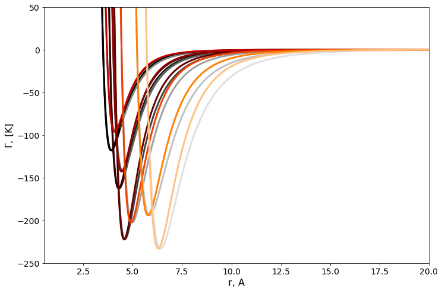
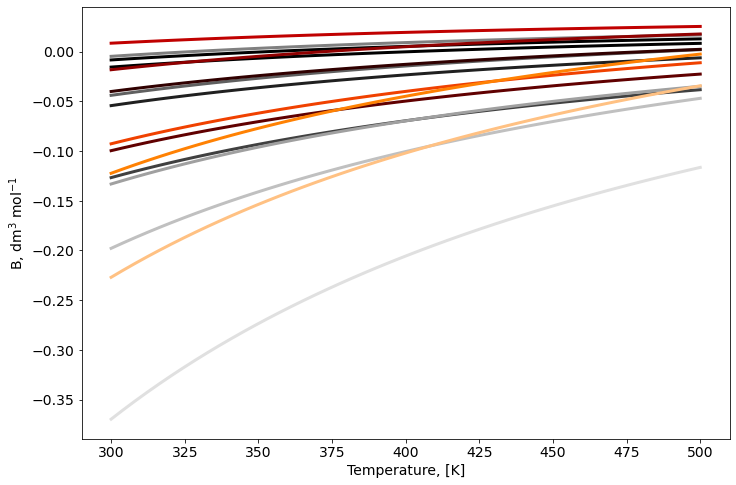
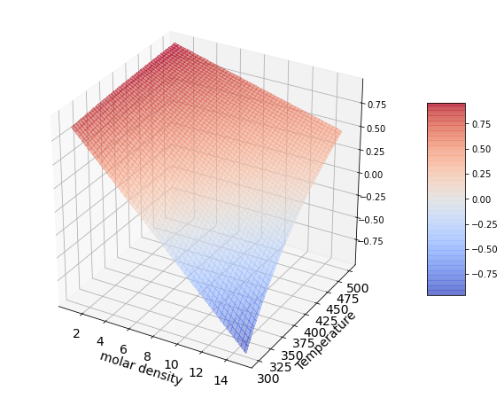
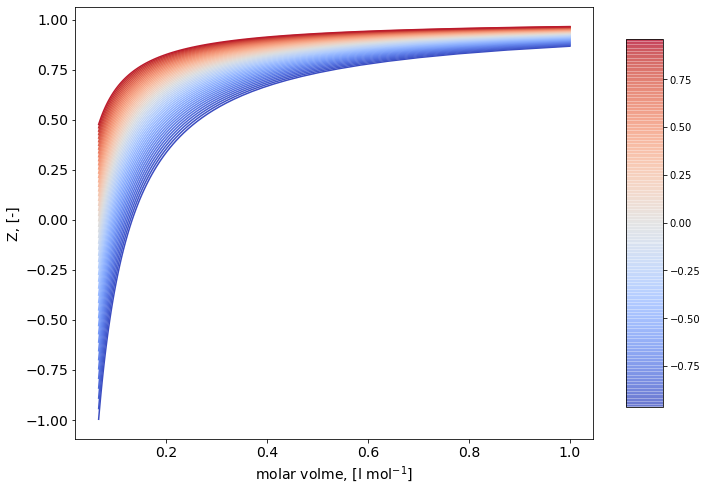
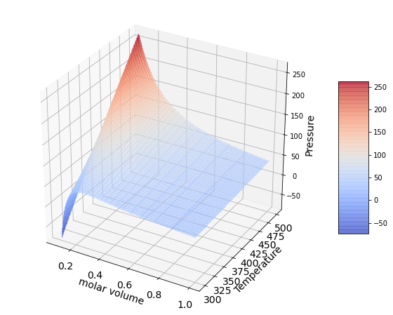
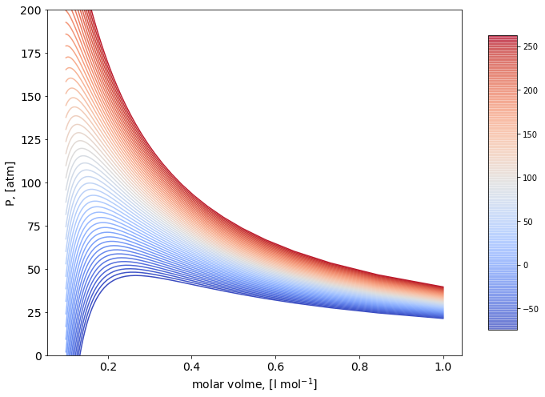

Volumetric Behaviour of Pure Fluids from Intermolecular Interactions¶
Two body interaction potential¶
import matplotlib.pyplot as plt
from matplotlib import cm
import numpy as np
figure=plt.figure()
axes = figure.add_axes([0.1,0.1,1.5,1.5])
plt.xticks(fontsize=14)
plt.yticks(fontsize=14)
axes.set_xlabel('r, A', fontsize=14);
axes.set_ylabel('$\Gamma$, [K]',fontsize=14);
axes.set_xlim([0.5,20]);
axes.set_ylim([-250,50]);
#Intermolecular Potential, i.e. LJ 6/12
#Species=[Ar, Kr, Xe, CH4, N2, C2H4, C2H6, C3H8]
SIGMA=[3.499, 3.846, 4.100, 4.010, 3.694, 4.433, 5.220, 5.711] # Angstrom
EPS=[118.13, 162.74, 222.32, 142.87, 96.26, 202.52, 194.14, 233.28] #K
r = np.linspace(0.3, 25, 500)
Gamma=np.zeros((np.size(r),np.size(SIGMA)))
color=iter(cm.gist_heat(np.linspace(0,1,np.size(SIGMA)+1)))
for i in np.arange(0,np.size(SIGMA)):
c=next(color)
sr6=np.power(np.divide(SIGMA[i],r),6)
Gamma[:,i]=4*EPS[i]*(np.power(sr6,2)-sr6)
axes.plot(r,Gamma[:,i], marker=' ' , c=c);

Second Virial Coefficient¶
# Compute the second Virial coefficient as a function of T
Temperature = np.linspace(300, 500, 50)
figure=plt.figure()
axes = figure.add_axes([0.1,0.1,1.5,1.5])
plt.xticks(fontsize=14)
plt.yticks(fontsize=14)
axes.set_xlabel('Temperature, [K]', fontsize=14);
axes.set_ylabel('B, dm$^3$ mol$^{-1}$',fontsize=14);
B=np.zeros((np.size(Temperature),np.size(SIGMA)))
color=iter(cm.gist_heat(np.linspace(0,1,np.size(SIGMA)+1)))
for i in np.arange(0,np.size(SIGMA)):
c=next(color)
for j in np.arange(0,np.size(Temperature)):
B[j,i]=2*np.pi*6E23*np.trapz((1-np.exp(-Gamma[:,i]/Temperature[j]))*np.power(r*1E-9,2),r*1E-9)
axes.plot(Temperature,B[:,i], marker=' ' , c=c);

## Volumetric
import numpy as np
import pandas as pd
from matplotlib import cm
import matplotlib.pyplot as plt
from mpl_toolkits.mplot3d import Axes3D
###
##Choose Chemical Specie:
#Species=[Ar, Kr, Xe, CH4, N2, C2H4, C2H6, C3H8]
Chem_Sp=5
###
## Z Diagram
rho=np.linspace(1, 15, 100) # mol / l
rho_g, Temperature_g = np.meshgrid(rho, Temperature)
Z=np.zeros((np.shape(rho_g)))
for i in np.arange(0,np.size(rho)):
Z[:,i]=1+rho_g[:,i]*B[:,Chem_Sp]
figure=plt.figure(figsize=(10, 8))
axes = figure.gca(projection ='3d')
plt.xticks(fontsize=14)
plt.yticks(fontsize=14)
surf=axes.plot_surface(rho_g,Temperature_g,Z,cmap=cm.coolwarm,
linewidth=0, antialiased=False,alpha=0.5)
axes.set_xlabel('molar density', fontsize=14);
axes.set_ylabel('Temperature',fontsize=14);
figure.colorbar(surf, shrink=0.5, aspect=5);
figure=plt.figure()
axes = figure.add_axes([0.1,0.1,1.5,1.5])
plt.xticks(fontsize=14)
plt.yticks(fontsize=14)
axes.set_xlabel('molar volme, [l mol$^{-1}$]', fontsize=14);
axes.set_ylabel('Z, [-]',fontsize=14);
color=iter(cm.coolwarm(np.linspace(0,1,np.size(Temperature)+1)))
for i in np.arange(0,np.size(Temperature)):
c=next(color)
axes.plot(1/rho,Z[i,:], marker=' ' , c=c);
figure.colorbar(surf, shrink=0.85, aspect=10);


## P/v isotherms Diagram
rho=np.linspace(1, 10, 50) # mol / l
rho_g, Temperature_g = np.meshgrid(rho, Temperature)
P=np.zeros((np.shape(rho_g)))
R=0.082;
for i in np.arange(0,np.size(rho)):
P[:,i]=Temperature_g[:,i]*R*rho_g[:,i]+Temperature_g[:,i]*R*rho_g[:,i]*rho_g[:,i]*B[:,Chem_Sp]
figure=plt.figure(figsize=(10, 8))
#axes = figure.add_axes([0.1,0.1,0.1,1.2,1.2,1.2])
axes = figure.gca(projection ='3d')
plt.xticks(fontsize=14)
plt.yticks(fontsize=14)
surf=axes.plot_surface(1/rho_g,Temperature_g,P,cmap=cm.coolwarm,
linewidth=0, antialiased=False,alpha=0.5)
axes.set_xlabel('molar volume', fontsize=14);
axes.set_ylabel('Temperature',fontsize=14);
axes.set_zlabel('Pressure',fontsize=14);
figure.colorbar(surf, shrink=0.5, aspect=5);
figure=plt.figure()
axes = figure.add_axes([0.1,0.1,1.5,1.5])
plt.xticks(fontsize=14)
plt.yticks(fontsize=14)
axes.set_xlabel('molar volme, [l mol$^{-1}$]', fontsize=14);
axes.set_ylabel('P, [atm]',fontsize=14);
color=iter(cm.coolwarm(np.linspace(0,1,np.size(Temperature)+1)))
for i in np.arange(0,np.size(Temperature)):
c=next(color)
axes.plot(1/rho,P[i,:], marker=' ' , c=c);
axes.set_ylim([0,200]);
figure.colorbar(surf, shrink=0.85, aspect=10);

